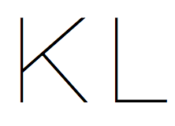
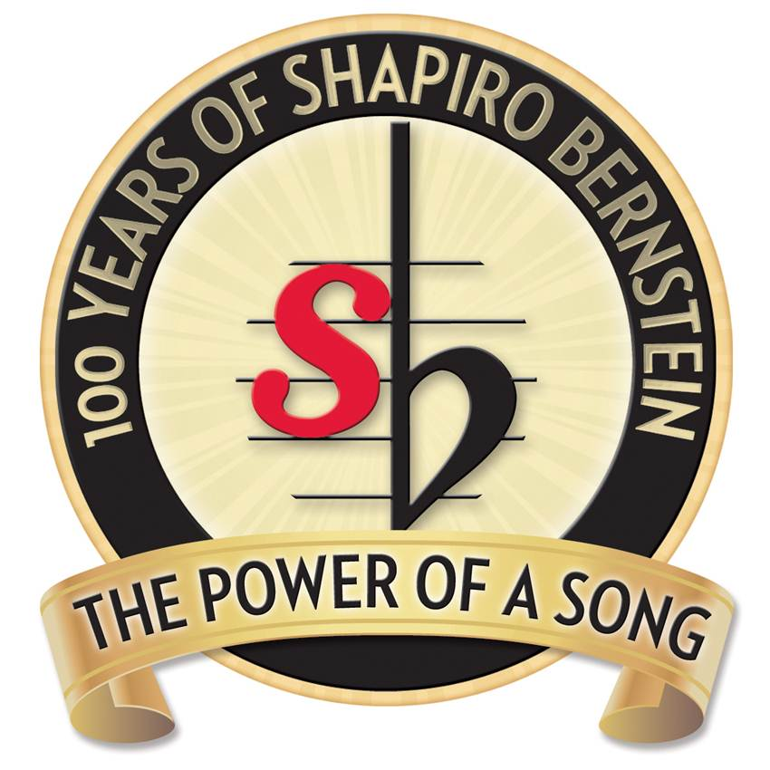
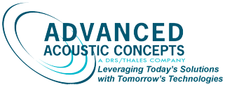
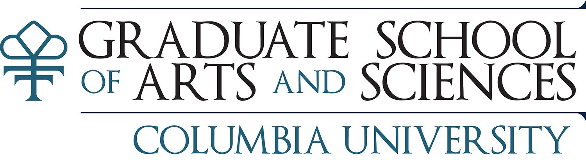
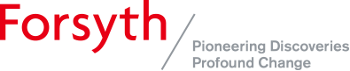
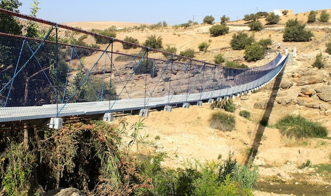
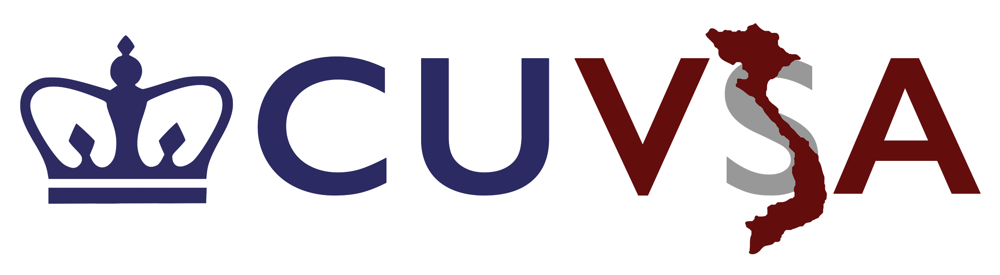
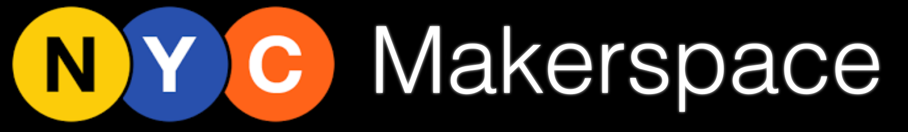
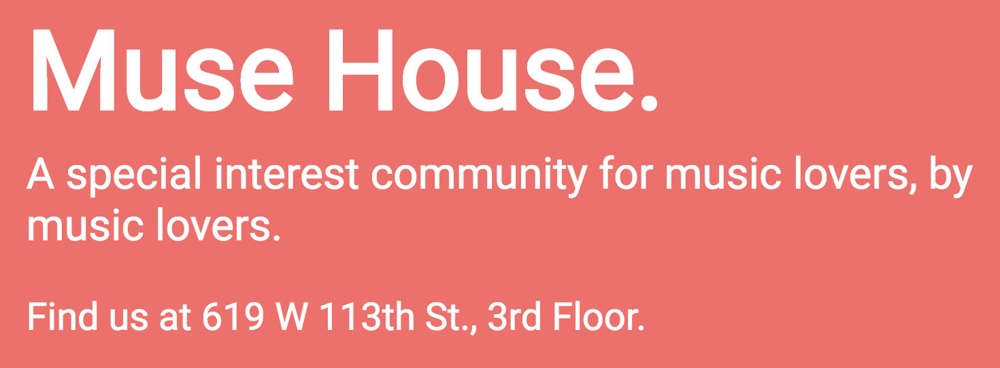

Contact me at: k.le@columbia.edu

I am a second-year student at Columbia University studying operations research and analytics, with a minor in entrepreneurship and innovation. Currently, I work as a technology consultant for music businesses. In school, I am involved with Engineers Without Borders, Design for America, Vietnamese Students Association, CU Records, NYC MakerSpace, and Muse House. I also used to be involved with Columbia Space Initiative and HealthHacks NYC. Prior to Columbia, I worked heavily with robotics and education. I pride myself in being a versatile team player who is able to understand and approach problems from a low level to a high level. This can be seen in my past work, projects, and teams, through which I have experience both in developing and designing impactful solutions from scratch and in managing large-scale projects.
Contact me at: k.le@columbia.edu
As a musician, software developer, and designer with experience working within the NYC music industry through all three lenses, I carry a unique and comprehensive understanding of music business that allows me to tackle my clients' pain points from a low level to a high level. My consulting services currently include website strategy and design, development of music data analysis software tailored to a client's needs, development of precise, large-scale music data management software to improve the efficiency of day-to-day operations, and insight on tech-related investments. My primary client is currently Shapiro Bernstein, the oldest independent music publisher in America.

Shapiro Bernstein is the oldest independent music publisher in the United States. I led the development of software for the analysis of royalty earnings on a global scale, the identification of owned songs missing legal claims across popular streaming platforms (e.x. Spotify), the comparison of income data from third parties (e.x. YouTube, ASCAP), and the filtration of inconsistencies in Shapiro Bernstein's internal database. Additionally, I assisted in general income organizing and office support.
shapirobernstein.com

Advanced Acoustic Concepts is a naval defense contractor owned by DRS/Thales. I developed the backend of an automated system testing infrastructure prototype for AAC's tactical simulation software. Previously, any simulation scenario could only be run and recorded manually. The prototype allowed any amount and kind of test to be run based off user-specific criteria. By the end of the summer, the prototype was deemed successful and viable, moving to a partial implementation phase.
advancedacousticconcepts.com

The Columbia Graduate School of Chemistry Office handles all operations and administration related to chemistry graduate students at Columbia University. As an administrative assistant, I perform a wide range of administrative and office support activities including creating large-scale digital databases and organizing student materials to facilitate efficient running of the office.
chem.columbia.edu

The Forsyth Institute is a leader in oral and systemic disease research. I proposed and conducted an original experiment involving C. elegans and M. smegmatis, a mycobacterium closely related to M. tuberculosis, with a focus on studying how C. elegans impact the unique cell wall and mycolic acid lattice of M. smegmatis. My work eventually held a provisional patent.
View our paper here.
forsyth.org

Engineers Without Borders is an organization consisting of various collegiate and professional chapters that work on designing and implementing infrastructural solutions to developing communities. As Columbia's Engineers Without Borders-Morocco project manager, my responsibility is to coordinate and direct the efforts of all EWB-Morocco project teams (water technical, bridge technical, community development, business, grants) and ensure compliance with professional standards. The ultimate goal of the EWB-Morocco program is to build a sustainable bridge and extensive clean water distribution system to the Bizdad region of Essasouria. Before being project manager, I was the water technical lead and the fundraising chair for EWB-Morocco.
morocco.cuewb.org


The Barnard-Columbia Design for America is a consulting club that works with local non-profits in NYC to develop human-centered design solutions to pain points within each organization. Human-centered design is an empathetic design process which focuses around the users to create impactful solutions. I am currently consulting the Billion Oyster Project, a nonprofit dedicated to restoring NYC's waterfronts, on increasing web traffic and on improving their ability to educate the public about what they do. Additionally, I am working on the operations and logistics for Columbia's first designathon.
bcdfa.com
The Columbia Vietnamese Students Association works to foster a community for the Vietnamese and Vietnamese-American community at Columbia University, and also on sharing Vietnamese culture within NYC. As the social chair, I organize events to help Vietnamese and Vietnamese-American students at Columbia bond with each other. I also handle all marketing and social media material.
View the CU-VSA Facebook page here

CU Records is a student-run recording studio at Columbia whose mission is to provide a free and open studio for local artists. As one of the earliest studio engineers for CU records, I work on maintaining and improving the studio. I also work with musicians, filmmakers, and other artists to make high quality recordings, and to mix and master songs.
curecords.org
NYC MakerSpace is an organization whose goal is to create a public and sustainable system of makerspaces so anyone throughout NYC can have equal access to advanced resources and education. New this year, we are currently working with a pilot space at the Pelham Fritz Recreation Center. As outreach coordinator, I work on sponsor recruitment and curriculum development.
nycmakerspace.org

Muse House is Columbia University's music-focused residence community, new this year. As an early committee member, I work on shaping what Muse House will be in the future and I organize music-related events for Columbia University. I am also developing the website for Muse House.
(In Progress) View the Muse House site here

Since I was a kid, I have been playing piano. I started writing my own music when I was 14, and it's a passion of mine that I do for fun in my free time to destress. I like to view it as my audio diary. Stylistically, I'm most influenced by punk, rock, and classical music. Some selected excerpts and sheet music I've written are below.
Finding Blue (Excerpt)
Stupid Little Vietnamese Boy (Excerpt)
Fade (Excerpt ft. my roommate)
Richter (Excerpt)
As a part of the Micro-G NeXT team, I worked on a small team to develop a subsurface sampling device for asteroid use. Given a set of design criteria, the device was expected to be able to collect both regolith (similar to sand/gravel) and rock core samples while maintaining stratification. After design approval, the device was manufactured and presented at NASA's Neutral Buoyancy Lab in June 2017. There, it was the most successful device at collecting regolith. I also acted as the team's outreach lead, organizing several aerospace workshops and presentations within NYC.
View the final report of the design here.
HealthHacks NYC was Columbia's first ever medical-themed hackathon. It was a 36 hour event bringing in hundreds of college students from around the country to program and build solutions to today's health problems. As the branding lead, I was responsible for creating branded material for marketing and communication purposes, as well as helping to define the vision for the event. The total valuation of the event in the end was $30,000.
healthhacks.nyc

I designed new engineering curricula and teacher training materials for the Lexington, MA public school system, culminating in a $10,000 initiative to transition the curricula to all elementary schools. After a successful pilot year at 1/3 of the elementary schools in Lexington, $20,000 was added to its funding, and I transitioned the project to a new team. Today, the curriculum has expanded and is fully integrated across all six Lexington elementary public school systems, impacting several thousand students.
View the original curriculum here.

I established an $5,000 MakerSpace called "OpenSource" for students and faculty to create whatever, whenever. After a successful pilot year, $10,000 was added to funding, and I transitioned the project to a new team.
I was the captain of 2 Bits and a Byte (FTC 4029), the LHS robotics team from 2014-2016. During both years of my captainship the team qualified to the FTC World Championship and made it to World Division Semi-Finals in the 2015-2016 season.
I co-founded and led an annual 150+ student high school hackathon in the Greater Boston Area from 2014-2016. It has since transitioned to a new team. Learn more at: www.lexhack.org